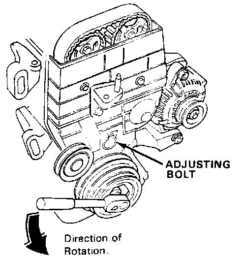

Timing Belt Tensioner: Adjustments

Tension Adjustment
CAUTION: Always adjust timing belt tension with the engine cold.
NOTE: Tensioner is spring-loaded to apply proper tension to the belt automatically after making the following adjustment.
1. Remove the valve cover.
2. Set the No. 1 piston at TDC.
3. Loosen the adjusting bolt.
4. Rotate the crankshaft counterclockwise 3-teeth on the camshaft pulley to create tension on the timing belt.
5. Tighten the adjusting bolt.
6. If the pulley bolt loosens while turning the crank, retorque it to 120 N.m (12.0 kg.m, 87 lb.ft).